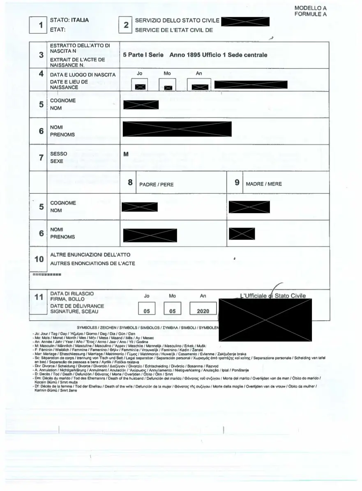

Documents Needed for Italian Citizenship by Descent:
2026 Checklist
A complete guide to every document you need for a Jure Sanguinis application — what's always required, what's case-specific, and how everything must be processed.
Last updated: November 7, 2026
Short answer (as of November 2026)
You need birth, marriage and death records for each generation from your Italian ancestor to you, the ancestor's Italian birth record, and their naturalization record or a Certificate of Non-Existence. Under the 2025 rules you also need evidence that your qualifying parent or grandparent held exclusively Italian citizenship. U.S. records need apostilles and Italian translations.
Important 2025 update
Under Law 74/2025, applicants born abroad who hold another citizenship generally need a parent or grandparent who held exclusively Italian citizenship, or a parent who lived in Italy for two continuous years after becoming a citizen. The documents required remain largely the same, plus proof of that exclusive citizenship (for example, certificates confirming no other citizenship was held). Separately, Italy's 2025 Budget Law set a €600 government fee per adult applicant.
Why document preparation matters so much
Applying for Italian citizenship through Jure Sanguinis is an intensely document-driven process. It is not enough to simply have the right ancestry — you must prove an unbroken, legally documented chain of Italian citizenship from your ancestor down to yourself. A single missing record, an improperly processed apostille, or a name discrepancy between documents can cause significant delays or rejection.
The specific documents you need depend on your unique lineage, the number of generations involved, the route you're applying through (consulate, municipality, or court), and the specific requirements of the consulate or court handling your case.
Documents always required
Regardless of your specific case, every Jure Sanguinis application requires all of the following:
- Birth, marriage, and death certificates of your Italian ancestor — obtained from the Italian comune (municipality) where they were born. If the original records are unavailable, a certified copy or baptism record may be accepted.
- Birth, marriage, and death certificates for every direct ancestor in your lineage — everyone between your Italian ancestor and you, including parents and grandparents. These must trace the unbroken chain.
- Your own birth certificate — long-form (full) certified copy. An apostille and Italian translation may be required depending on your route.
- Naturalization records — or a Certificate of Non-Existence — for your Italian ancestor. This proves whether and when they became a citizen of another country. If no record exists, USCIS or the relevant agency can issue a formal Certificate of Non-Existence.
- A certified Italian birth record with the municipality's stamp — the original Italian vital records for your ancestor, obtained directly from the comune.
For your ancestor's Italian birth record, see how to get an Italian birth certificate, with a request letter in Italian.
Case-dependent documents
The following documents are required only if they are relevant to someone in your direct lineage. Whether they must be included is ultimately at the discretion of your lawyer, consulate, or comune — but having them ready prevents delays:
- Adoption records — if anyone in your lineage was adopted
- Divorce records — if anyone in your lineage is divorced (to establish name consistency and marital history)
- Military records — if relevant to your ancestor's history or to establish dates
- Document of Non-Existence — an official statement from the government body confirming a specific document does not exist, was lost, or was destroyed
- For 1948 cases: naturalization records for both the female ancestor and her foreign spouse, to establish the citizenship status of both parties at the time of transmission
- U.S. Naturalization Document — if the relevant ancestor did naturalize, the actual naturalization certificate is required to establish the date

Region-dependent documents (consulate applications)
If you are applying through an Italian consulate, requirements vary significantly by jurisdiction. Many consulates require documentation not only for direct ancestors but also for their spouses — which means you may need to provide birth, marriage, and death certificates for people who are not technically in your direct Italian lineage (such as your Italian ancestor's spouse who was not Italian).
It is essential to check the specific requirements of your consulate before assembling your file. Submitting an incomplete file to a consulate typically results in a rejection and a return to the back of the wait queue.
Checklist by route
The core line documents are the same for every route. What changes is what else you need and where it goes. Always check your consulate's or lawyer's list before ordering.
| Route | In addition to the core line documents | Where it goes |
|---|---|---|
| Consulate | Proof of residence in the consular district; ID; evidence a parent or grandparent held exclusively Italian citizenship (for example naturalization records or a CONE, and any certificates your consulate lists); consulate application forms; €600 fee | Your consulate, at your appointment (find yours) |
| Court (ATQ) | The same line and exclusive-citizenship evidence; a power of attorney for your Italian lawyer; evidence of the consulate delay, where relevant; €600 court fee per claimant | Your lawyer, who files in the court for your ancestor's birthplace |
| 1948 case | Everything for a court case, plus the records showing the line passes through a woman to a child born before January 1, 1948, and the qualifying parent or grandparent under Article 3-bis | Your lawyer (how 1948 cases work) |
| Apply from Italy | Proof of legal residence at an Italian comune; the same line documents; up to €600 municipal fee | The comune where you live (applying from Italy) |
| Children by 2029 | The child's birth record; parents' IDs; AIRE registration; parents' proof of citizenship by birth | Your consulate (registering children) |
U.S. records need an apostille from the issuing state (or the U.S. Department of State for federal records) and a translation into Italian. Consulate-specific notes are in our U.S. consulate guides.
Official consulate checklists (United States)
Each consulate publishes its own checklist, and it is the final word on which documents, translations and forms it accepts. Read yours before ordering or translating anything. Los Angeles, for example, revised its checklist in May 2026.
| Consulate | Checklist and instructions | Area covered and tips |
|---|---|---|
| New York | Official citizenship page | Our New York guide |
| Boston | Official citizenship page | Our Boston guide |
| Philadelphia | Official citizenship page | Our Philadelphia guide |
| Washington, DC (Embassy) | Official citizenship page | Our Washington, DC guide |
| Miami | Official citizenship page | Our Miami guide |
| Chicago | Official citizenship page | Our Chicago guide |
| Detroit | Official citizenship page | Our Detroit guide |
| Houston | Official citizenship page | Our Houston guide |
| Los Angeles | Official citizenship page | Our Los Angeles guide |
| San Francisco | Official citizenship page | Our San Francisco guide |
Not sure which consulate serves you? It depends on where you live now, not where your ancestor lived. See consulate wait times by jurisdiction.
How to process documents for submission
Official Italian documents generally do not require additional processing. All foreign (non-Italian) documents, however, must be properly processed before submission.
Apostille authentication
Documents such as birth, marriage, death, and naturalization certificates must be apostilled — a form of international certification that confirms the document is authentic and valid for use in another country. The apostille is issued by a designated government authority in the document's country of origin (in the U.S., typically the Secretary of State of the issuing state).
Translation into Italian
All foreign documents must be translated into Italian by a certified translator. For court submissions, translations must be sworn and certified — meaning the translator formally attests to the accuracy of the translation in a legal context. For consulate submissions, the requirements may vary.
Certification of translations
Depending on where you are applying, translations may need additional certification by a public notary or by a consulate. Your lawyer or our team will advise on the specific requirements for your case.
Legalization (for non-Hague Convention countries)
If any documents originate from a country that is not a signatory to the Hague Apostille Convention, a more involved legalization process is required — involving both the foreign country's ministry and the Italian consulate. This is uncommon for U.S.-based applicants but may apply if you have documents from certain South American or other countries.
Document quick reference table
| Document | Required? | Notes |
|---|---|---|
| Italian Ancestor's Birth Certificate | Always | Obtained from the Italian comune. For 1948 cases, also required for the ancestor's spouse. |
| Applicant's Birth Certificate | Always | Long-form certified copy. Apostille and Italian translation may be required. |
| Marriage Certificate(s) | Often | Required if a marriage is part of the direct lineage. Some consulates also require spouses' certificates. |
| Naturalization Records or Certificate of Non-Existence | Always | Proves citizenship status. If no record exists, a formal Certificate of Non-Existence is required. For 1948 cases, also required for the spouse. |
| Apostilles & Certified Italian Translations | Always | Required for all non-Italian documents. Court submissions require sworn translations. |
| Death Certificates | Often | Required for deceased ancestors in the direct line. May also be required by some consulates for spouses. |
| Adoption, Divorce, Military Records | Case-by-case | Only required if applicable to someone in your direct lineage — often to resolve name discrepancies. |
Need help assembling your documents?
Our document procurement team handles the full process — from sourcing Italian vital records to apostilles and certified translations. Check your eligibility to get started.
See also: apostilles and certified translations.
Frequently asked questions
Every Jure Sanguinis application requires birth, marriage, and death certificates of your Italian ancestor; birth, marriage, and death certificates of every direct ancestor in your lineage; your own long-form birth certificate; naturalization records (or a Certificate of Non-Existence) for your Italian ancestor; and, since 2025, proof that you meet Article 3-bis (for example, that a parent or grandparent held exclusively Italian citizenship).
Depending on your specific case, you may also need adoption records, divorce records, military records, a Document of Non-Existence for any missing record, or — for 1948 cases — naturalization documents for both the female ancestor and her foreign spouse.
All non-Italian documents must be apostilled to confirm international validity, translated into Italian by a certified translator (sworn/certified for court submissions), and the translations may need notarization or consulate certification depending on the route. Countries outside the Hague Convention require additional legalization steps.
A Certificate of Non-Existence is an official statement from the government body responsible for issuing a specific document (such as USCIS) confirming that the document does not exist, has been lost, or was destroyed. It is used when your ancestor has no naturalization record — which is often very positive for an Italian citizenship claim.
Yes. Document requirements vary significantly by consulate jurisdiction. Some require records for individuals outside your direct lineage (such as spouses of direct ancestors). Always verify the specific requirements of your consulate before submitting — an incomplete file leads to follow-up requests or refusal, and delays your case.
Related Guides
Continue reading
Getting Started
How to get started with Italian citizenship by descent
Step-by-step guide to confirming your eligibility and finding the records you need.
Read →Eligibility
Citizenship through grandparents, parents, or great-grandparents
How generational distance affects your documents and application.
Read →FAQ
Italian citizenship by descent — FAQ
Answers to the most common questions about Jure Sanguinis and Law 74/2025.
Read →